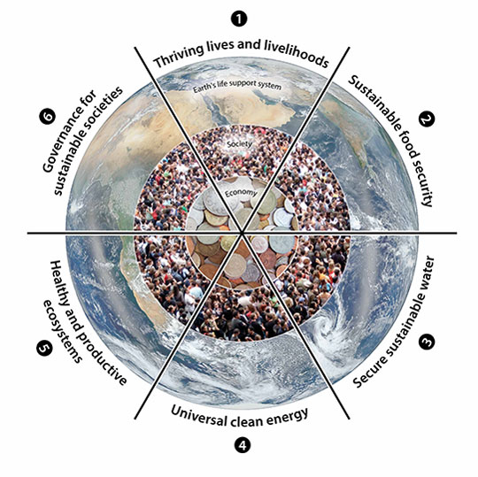

BLOGS BY APOORVA
Energy, environment and sustainable development | |
|---|---|
By:Apoorva Pandey | |
Date:22/08/2016 | |
|  | |
|
Globally, buildings are responsible for approximately 40% of the total world annual energy consumption. Most of this energy is for the provision of lighting, heating, cooling, and air conditioning. Increasing awareness of the environmental impact of CO2 and NOx emissions and CFCs triggered a renewed interest in environmentally friendly cooling, and heating technologies. Under the 1997 Montreal Protocol, governments agreed to phase out chemicals used as refrigerants that have the potential to destroy stratospheric ozone. It was therefore considered desirable to reduce energy consumption and decrease the rate of depletion of world energy reserves and pollution of the environment. One way of reducing building energy consumption is to design building, which are more economical in their use of energy for heating, lighting, cooling, ventilation and hot water supply. Passive measures, particularly natural or hybrid ventilation rather than air-conditioning, can dramatically reduce primary energy consumption. However, exploitation of renewable energy in buildings and agricultural greenhouses can, also, significantly contribute towards reducing dependency on fossil fuels. Therefore, promoting innovative renewable applications and reinforcing the renewable energy market will contribute to preservation of the ecosystem by reducing emissions at local and global levels. This will also contribute to the amelioration of environmental conditions by replacing conventional fuels with renewable energies that produce no air pollution or greenhouse gases. The provision of good indoor environmental quality while achieving energy and cost-efficient operation of the heating, ventilating and air-conditioning (HVAC) plants in buildings represents a multi-variant problem. The comfort of building occupants is dependent on many environmental parameters including air speed, temperature, relative humidity and quality in addition to lighting and noise. The overall objective is to provide a high level of building performance (BP), which can be defined as indoor environmental quality (IEQ), energy efficiency (EE) and cost efficiency (CE). Indoor environmental quality is the perceived condition of comfort that building occupants experience due to the physical and psychological conditions to which they are exposed by their surroundings. The main physical parameters affecting IEQ are air speed, temperature, relative humidity and quality. Energy efficiency is related to the provision of the desired environmental conditions while consuming the minimal quantity of energy. Cost efficiency is the financial expenditure on energy relative to the level of environmental comfort and productivity that the building occupants attained. The overall cost efficiency can be improved by improving the indoor environmental quality and the energy efficiency of a building. This article discusses the potential for such integrated systems in the stationary and portable power market in response to the critical need for a cleaner energy technology. Anticipated patterns of future energy use and consequent environmental impacts (acid precipitation, ozone depletion and the greenhouse effect or global warming) are comprehensively discussed in this paper. Throughout the theme several issues relating to renewable energies, environment and sustainable development are examined from both current and future perspectives. |
SUN | |
|---|---|
By:Apoorva Pandey | |
Date:22/08/2016 | |
|
Compared with the billions of other stars in the universe, the sun is unremarkable. But for Earth and the other planets that revolve around it, the sun is a powerful center of attention. It holds the solar system together; pours life-giving light, heat, and energy on Earth; and generates space weather. The sun is a big star. At about 864,000 miles (1.4 million kilometers) wide, it could hold 109 planet Earths across its surface. If the sun were a hollow ball, more than a million Earths could stuff inside it. But the sun isn't hollow. It's filled with scorching hot gases that account for more than 99.8 percent of the total mass in the solar system. How hot? The temperature is about 10,000 degrees Fahrenheit (5,500 degrees Celsius) on the surface and more than 28 million degrees Fahrenheit (15.5 million Celsius) at the core. Deep in the sun's core, nuclear fusion reactions convert hydrogen to helium, which generates energy. Particles of light called photons carry this energy through the sun's spherical shell, called the radiative zone, to the top layer of the solar interior, the convection zone. There, boiling motions of gases (like in a lava lamp) transfer the energy to the surface. This journey takes more than a million years. The sun's surface, or atmosphere, is divided into three regions: the photosphere, the chromosphere, and the solar corona. The photosphere is the visible surface of the sun and the lowest layer of the atmosphere. Just above the photosphere are the chromosphere and the corona, which also emit visible light but are only seen during a solar eclipse, when the moon passes between the Earth and sun. Solar Wind and Flares In addition to light, the sun radiates heat and a steady stream of charged particles known as the solar wind. The wind blows about 280 miles (450 kilometers) a second throughout the solar system. Every so often, a patch of particles will burst from the sun in a solar flare, which can disrupt satellite communications and knock out power on Earth. Flares usually stem from the activity of sunspots, cool regions of the photosphere related to a shifting magnetic field inside the sun. Like many energy sources, the sun is not forever. It is already about 4.5 billion years old and has used up nearly half of the hydrogen in its core. The sun will continue to burn through the hydrogen for another five billion years or so, and then helium will become its primary fuel. The sun will expand to about a hundred times its current size, swallowing Earth and other planets. It will burn as a red giant for another billion years and then collapse into a white dwarf about the size of planet Earth. |